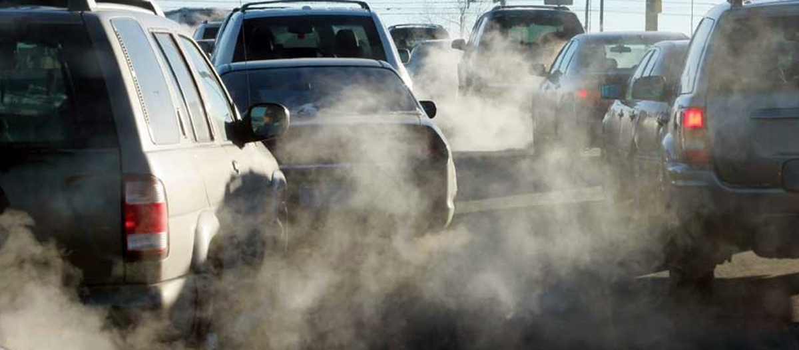
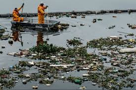
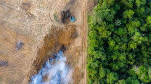
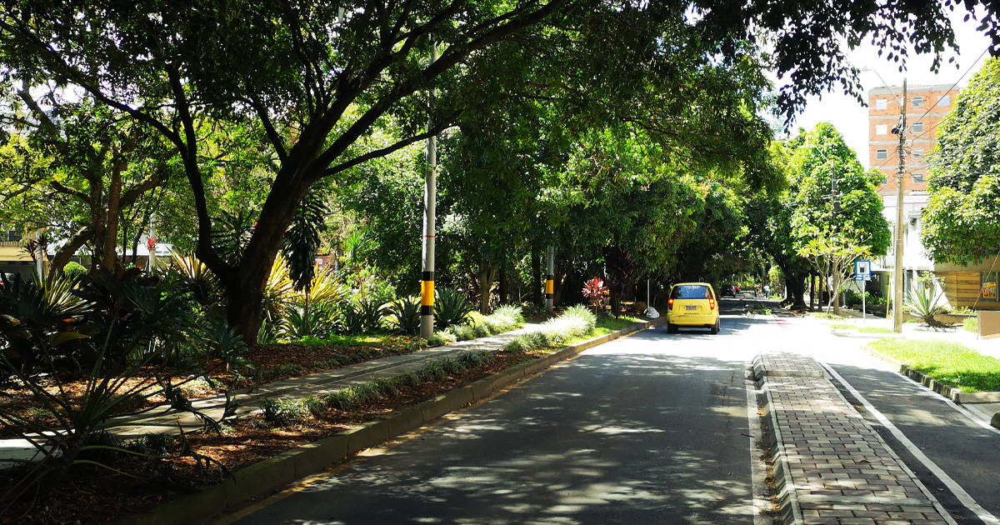
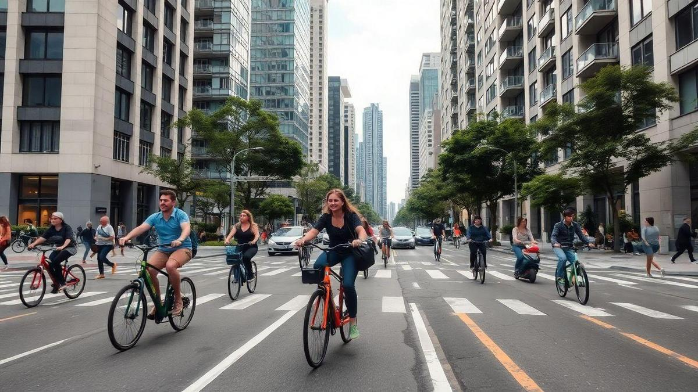
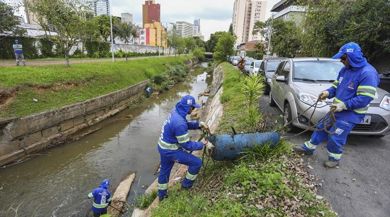
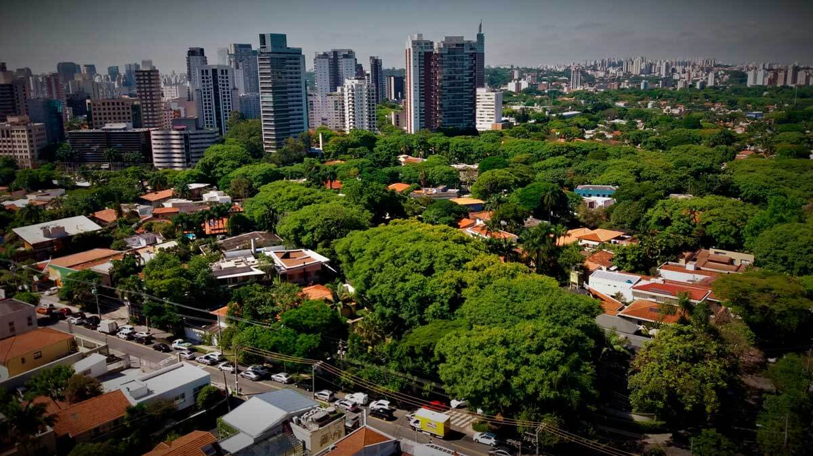
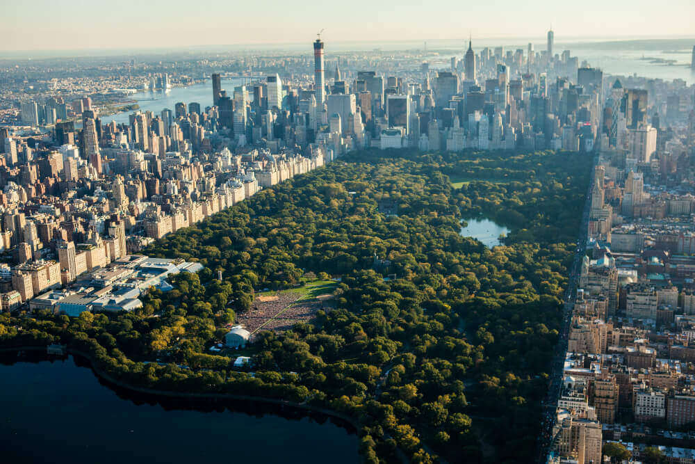
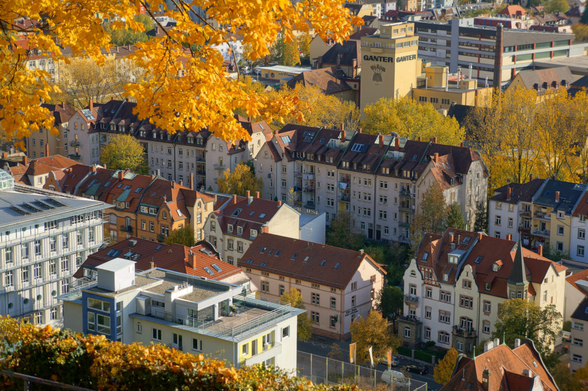
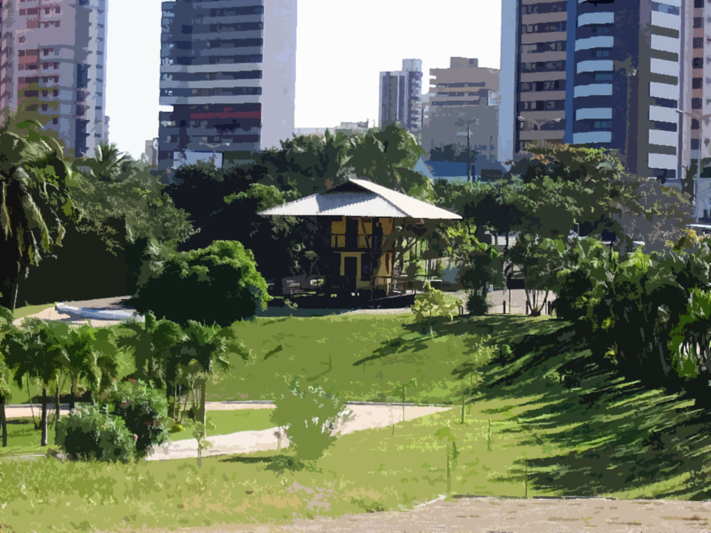

Uma experiência digital sobre o equilíbrio entre cidades modernas e natureza. Explore os desafios ambientais das marginais urbanas e descubra como podemos transformá-las em corredores verdes sustentáveis.

O intenso tráfego nas marginais libera grandes quantidades de gases poluentes que afetam a saúde humana e o clima urbano.

O descarte de resíduos e esgoto contribui para a degradação dos rios que passam pelas marginais.

O crescimento urbano reduz habitats naturais e limita a presença de espécies animais e vegetais.

Árvores e vegetação ajudam a reduzir poluição e melhorar o microclima urbano.

Ciclovias e transporte coletivo reduzem o uso de veículos individuais.

Projetos de limpeza e revitalização restauram ecossistemas aquáticos urbanos.




Imagine marginais transformadas em ecoparques urbanos: rios limpos, ciclovias seguras, áreas verdes conectadas e tecnologia monitorando a qualidade ambiental em tempo real.
Este site faz parte de um projeto maior sobre sustentabilidade urbana. A próxima página aprofundará soluções tecnológicas e projetos reais que podem transformar cidades.
Acessar próxima experiência